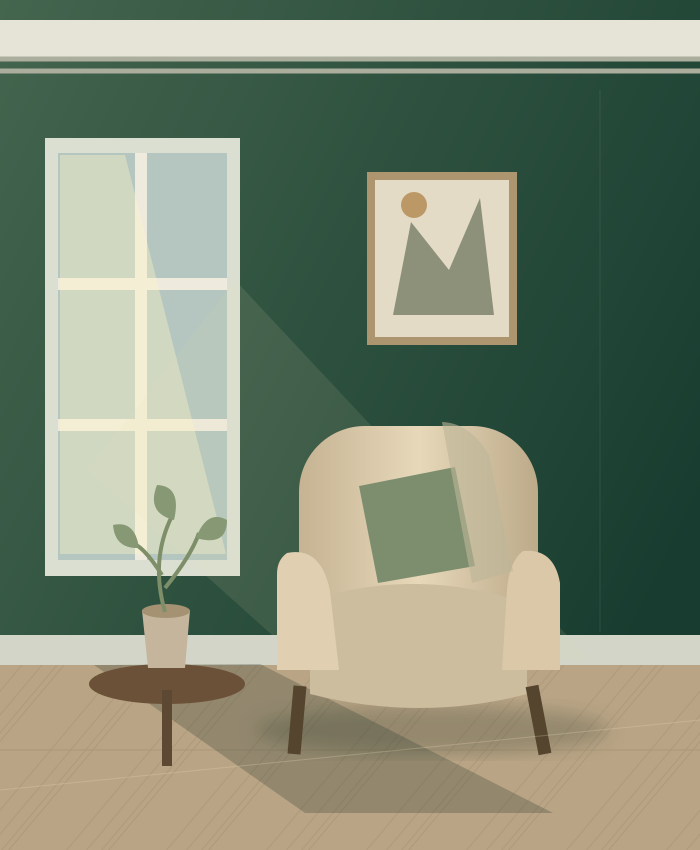

A bedroom, walls and ceiling
£340Two coats, minor filling, woodwork touched up. One and a half days.
PAINTERS & DECORATORS IN EDINBURGH
Two decorators, eighteen years, and a dislike of poorly cut-in edges. We paint homes across Edinburgh and the Lothians, and we leave them cleaner than we found them.
Dulux Select Decorator · Fully insured
SELECT-registered trade Brief-supplied demonstration claims

FIND YOUR SHADE
We mix and match to any brand — Farrow & Ball, Little Greene, Dulux Trade — and bring sample pots to the quote so you can see it on your own wall, in your own light.
Accent: Fern
GOOD WORK. NO SHORTCUTS.
Walls, ceilings, woodwork and doors, with proper preparation: filling, sanding, caulking and two full coats.
from £280 a roomRender, masonry, sash windows and front doors, weather permitting and scaffolded where needed.
from £1,400Hanging, lining and pattern matching, including heavy and delicate papers.
from £180 a wallSash window repair, stripping, knotting and repainting period joinery.
quoted per jobIllustrated colour studies, inspired by the brief. Project photographs are not supplied.
NO MYSTERY. NO MESS.
A little disruption. A lot of care.
We come round, measure, bring sample pots, and email a fixed price within two days.
Furniture moved and covered, floors sheeted, then filling, sanding and caulking. Most of the work is here.
Ceilings, then walls, then woodwork, in that order, every time.
Cut in by hand. We don't tape, because a steady hand gives a sharper line.
We walk round with you, fix anything you spot, and take every dust sheet away.
SOMETHING TO GO ON
Examples supplied in the design brief; your home needs an individual quote.
Two coats, minor filling, woodwork touched up. One and a half days.
Full prep, two coats throughout, banister and spindles by hand. Three days.
Every room, ceilings, woodwork and doors, paint included. Nine days.
KIND WORDS · ILLUSTRATIVE TESTIMONIALS
“They filled and sanded for a whole day before a drop of paint went on. You can see the difference on the cornice.”Katie, Marchmont
“Quoted £890, charged £890, finished a day early and hoovered the stairs.”Douglas, Corstorphine
“Our sash windows were rotten at the bottom. They repaired rather than replaced and saved us thousands.”Fiona, Leith
LET'S TALK ABOUT YOUR HOME
Monday to Friday 7:30am – 5pm
Quotes in the evening by arrangement.
Edinburgh · Leith · Morningside · Corstorphine · Portobello · Musselburgh · Dalkeith · Livingston · Linlithgow · South Queensferry